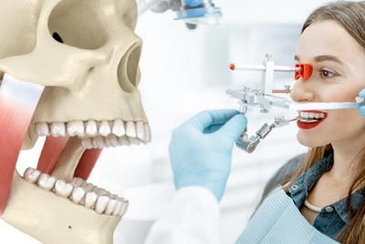
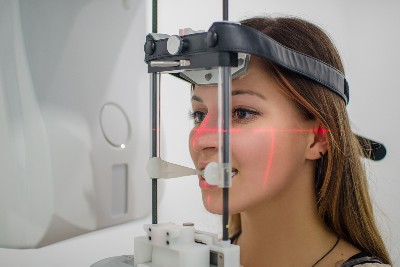

Скрежет зубами: причины и лечение
Что такое бруксизм
Cегодня директор Института Гнатологии, Екатерина Петровна Пинегина, отвечает на множество вопросов, связанных с бруксизмом
Бруксизм – это наблюдаемый днем или ночью (во сне) скрежет зубами у взрослых мужчин и женщин по причине непроизвольного сокращения жевательных или лицевых мышц. Реже патология встречается у детей (в период смены прикуса) и у подростков.
Бруксизм - какие симптомы?
Известно, что сильное скрежетание зубами во сне является основным признаком бруксизма, однако это не единственный симптом.
Это состояние обладает разнообразной симптоматикой, включая явные и косвенные признаки и проявления.
Разберем явные признаки бруксизма
- Скрип зубами
- Непроизвольное сжатие челюстей
- Боли в челюстях
- Гиперчувствительность эмали
- Трещины коронок, сколы
Разберем явные признаки бруксизма
К кому обращаться, если у вас есть симптомы бруксизма
Ночной и дневной скрежет зубами
У взрослых людей скрежет зубами наблюдается чаще, чем у детей и,
в основном, это происходит ночью.
Немного теории и формулировок. Бруксизм – это скрежет зубами у человека ночью. Если же днем, то это бруксиомания.
Дневной бруксизм менее выражен, так как пациент лучше контролирует работу мышц челюстей. Обычно это – лишь сжатие или постукивание зубами, небольшое скрежетание.Диагностика
При бруксизме, гнатолог проводит комплексное обследование, которое, кроме пальпации включает в себя:
- Рентгенография
- КЛКТ ВНЧС или челюсти
- МРТ ВНЧС
- Кондилография 
Лечение
Стоматологический клинический протокол лечения сустава при бруксизме составляется индивидуально и включает в себя:
- Медикаментозная терапия - подбор обезболивающих
- Индивидуальные окклюзионные шины – нормализация положения жевательных мышц
- МРТ ВНЧС
- TENS-терапия – восстановление эластичности мышечных волокон
- Общее стоматологическое лечение 